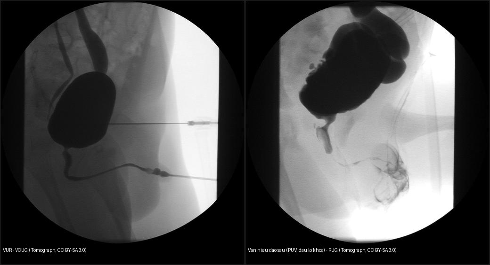
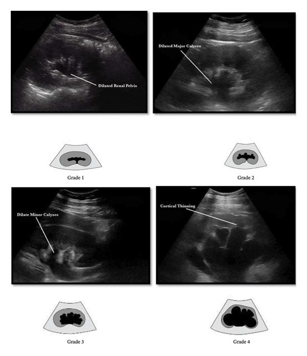
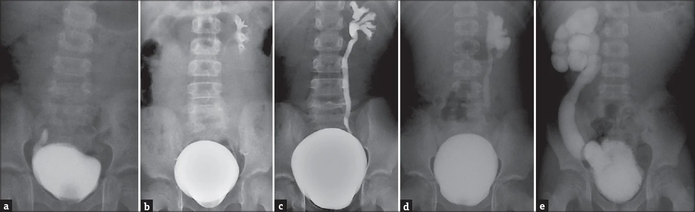

635 — Dị tật hệ tiết niệu nhi: ứ nước thận SFU 1–4, trào ngược VUR I–V & van niệu đạo sau (PUV)
Tags: pattern:than-u-nuoc-nhi pattern:trao-nguoc-bang-quang-nieu-quan pattern:van-nieu-dao-sau vung:than-nieu-nhi score:SFU score:VUR protocol:sieu-am-than-nhi-VCUG
Mức chắc chắn (certainty): tổng hợp y văn (literature synthesis) — nhóm tự biên từ y văn mở (hướng dẫn hội + bài review có số), chưa gắn ca nguyên văn đơn lẻ.
1. Tổng quan — vì sao siêu âm thấy ứ nước & trào ngược
- Ứ nước thận (hydronephrosis) = giãn bể thận (renal pelvis) và/hoặc đài thận (calyces) do tăng áp lực trong hệ niệu. Hai cơ chế lớn quyết định can thiệp:
- Tắc nghẽn (obstruction): hẹp khúc nối bể-niệu quản (ureteropelvic junction obstruction, UPJO), van niệu đạo sau (posterior urethral valve, PUV) → cần giải áp/mổ.
- Trào ngược (vesicoureteral reflux, VUR): van chỗ nối bàng quang-niệu quản (ureterovesical junction, UVJ) không đủ → nước tiểu trào lên khi đi tiểu → kháng sinh dự phòng/theo dõi.
- TẠI SAO siêu âm thấy: nước tiểu là môi trường trống âm (anechoic) kèm tăng âm sau (posterior acoustic enhancement); bể thận/đài giãn tạo các ổ trống âm ở trung tâm thận. Giãn KHÔNG đồng nghĩa tắc — phải trả lời 3 câu: (1) bể thận có thông với đài không (nang đơn độc thì không thông); (2) niệu quản có giãn kèm không (→ trào ngược/megaureter/PUV); (3) bàng quang có bất thường không (thành dày/túi thừa/ổ niệu → nguyên nhân dưới).
- Định lượng lòng — đường kính bể thận trước-sau (anteroposterior renal pelvic diameter, RPD):
- Trước sinh: ≥ 28 tuần thai RPD ≥ 4 mm; ≥ 32 tuần ≥ 7 mm = giãn bất thường (cần siêu âm lại sau sinh), ≥ 10 mm = nguy cơ cao.
- Sau sinh: RPD < 10 mm** thường sinh lý; **10–15 mm** trung bình; **> 15 mm kèm giãn đài = nặng; nguy cơ tắc/mổ tăng theo RPD.
- SFU (Society for Fetal Urology, Fernbach 1993) — phân độ ứ nước thận:
- SFU 0: không giãn (ở nhũ nhi bể thận < 4 mm).
- SFU I: chỉ giãn bể thận, chưa giãn đài.
- SFU II: giãn bể + vài đài, nhu mô còn bình thường.
- SFU III: giãn bể + tất cả đài giãn, nhu mô còn dày.
- SFU IV: giãn bể + đài + nhu mô mỏng/dẹt (cortical thinning).
- Hệ hợp nhất mới UTD (Urinary Tract Dilatation, Nguyen & ACR 2014) gộp RPD + giãn đài + dày thành bể + giãn niệu quản + bất thường bàng quang → UTD A1–A3 (trước sinh) / P1–P3 (sau sinh) để chuẩn hóa theo dõi.
- VUR — phân độ International Reflux Study Committee 1985 trên VCUG: I trào đến niệu quản (không giãn); II đến bể thận (không giãn); III giãn nhẹ niệu quản + đài; IV giãn vừa + đài tù; V giãn lớn/xoắn + đài tù + chèn ảnh nhu mô. VUR đưa vi khuẩn lên thận khi bàng quang co → nhiễm khuẩn tiết niệu sốt = viêm thận–bể thận cấp, dẫn tới sẹo thận rồi tăng huyết áp/suy thận. VUR độ thấp (I–II) phần lớn tự khỏi theo tuổi; độ cao (IV–V) + sốt tái diễn = can thiệp.
- PUV (van niệu đạo sau) — trẻ nam, màng van ở niệu đạo sau ngăn dòng tiểu: tắc đường ra → bàng quang thành dày + túi thừa, niệu quản–thận 2 bên giãn ("hội chứng bàng quang van", valve bladder syndrome). VCUG: dấu lỗ khóa (keyhole sign) = bàng quang to + niệu đạo sau giãn. Creatinine đáy (nadir) sau giải áp > 0,8–1,0 mg/dL = nguy cơ cao tiến triển bệnh thận mạn; điều trị chuẩn = nội soi đốt van (valve ablation).
2. Mẫu hình + chẩn đoán phân biệt theo vị trí (gamut)
- Ứ nước thận 1 bên: hẹp khúc nối bể-niệu quản (UPJO — phổ biến nhất), VUR một bên, nang cạnh bể, nang đơn độc.
- Ứ nước thận 2 bên: PUV (nam), VUR hai bên, hẹp niệu đạo, bàng quang thần kinh.
- Niệu quản giãn (hydroureter): VUR, megaureter nguyên phát (tắc đoạn cắm UVJ), PUV.
- Nang thận KHÔNG thông: nang đơn độc; thận loạn sản đa nang (multicystic dysplastic kidney, MCKD) — "chùm nho" không nhu mô, không thông, teo dần, tiên lượng tốt; bệnh thận đa nang lặn NST lặn (ARPKD) — thận 2 bên to, dải xơ xuyên nhu mô.
- Đọc theo trục trên → dưới để không sót nguyên nhân: UPJO → megaureter/UVJ → VUR → bàng quang (PUV/túi thừa) → niệu đạo.
3. Bảng so sánh phân biệt (ma trận đối chiếu)
| Thực thể (entity) | Hình ảnh điển hình | Chốt vào (rule-in) | Chốt loại (rule-out) | Gợi ý xác nhận |
|---|---|---|---|---|
| Hẹp khúc nối bể-niệu quản (UPJO) | Ứ nước thận 1 bên, đài giãn, niệu quản rỗng | Niệu quản không giãn + RPD > 15 mm | Niệu quản giãn → nghĩ VUR/megaureter | MAG3 furosemide (t½ > 20 phút = tắc) |
| Trào ngược VUR | Giãn niệu quản ± thận, bàng quang bình thường | VCUG có trào ngược; RPD thay đổi đầy↔rỗng bàng quang | Niệu quản không trào ngược → UPJO | VCUG phân độ I–V; DMSA tìm sẹo |
| Van niệu đạo sau (PUV) | Bàng quang to thành dày + niệu đạo sau giãn (nam) | Dấu lỗ khóa (keyhole sign) + nam + bàng quang thành dày | Nữ, hoặc niệu đạo bình thường → loại PUV | VCUG + nội soi đốt van |
| Megaureter nguyên phát | Niệu quản giãn dài, đoạn cắm UVJ hẹp | Niệu quản giãn tới giãn nhiều, không trào ngược | Có trào ngược → VUR | VCUG (loại VUR) + MAG3 |
| MCKD | Nhiều nang không thông, không thấy nhu mô | Không có nhu mô chức năng giữa các nang | Còn nhu mô quanh bể giãn → ứ nước | US chuỗi ± DMSA (thận câm) |
| Giãn bể thận sinh lý | Bể giãn nhẹ < 10 mm, đài không giãn | RPD < 10 mm + đài bình thường + ổn định | Tăng dần/RPD ≥ 10 mm + giãn đài → bệnh lý | US lặp lại sau 4–6 tuần |

Trái: VUR trên VCUG — thuốc cản quang trào lên niệu quản giãn + bể thận. Phải: van niệu đạo sau (PUV) — bàng quang to + niệu đạo sau giãn tạo hình lỗ khóa. Nguồn: Tomograph, CC BY-SA 3.0. Ảnh ghép letterbox.4. Protocol chụp + hệ phân độ/điểm chuẩn hóa
- Siêu âm thận–bàng quang (US KUB): làm khi trẻ > 48 giờ tuổi (tránh giãn sinh lý sơ sinh); chụp bàng quang đầy để đo RPD (chỗ rộng nhất) + đài + độ dày nhu mô, rồi sau khi đi tiểu (post-void) để loại giãn do bàng quang căng; luôn khảo sát bàng quang (thành dày, túi thừa, ổ niệu).
- VCUG (voiding cystourethrogram): tiêu chuẩn vàng phân độ VUR + đánh giá niệu đạo (phát hiện PUV); chụp trong lúc trẻ đang đi tiểu.
- DMSA (xạ hình vỏ thận): phát hiện sẹo thận (vùng giảm/không bắt xạ khu trú) + chức năng riêng từng thận; < 40% = giảm đáng kể.
- MAG3 (xạ hình thận): chức năng + đánh giá tắc nghẽn: t½ sau lợi niệu furosemide > 20 phút gợi ý tắc nghẽn có ý nghĩa.
- Hệ điểm/phân độ: SFU 0–IV (siêu âm), UTD A1–A3 / P1–P3 (Nguyen/ACR 2014), VUR I–V (IRSC 1985).
flowchart TD
A[Ứ nước thận trên siêu âm] --> B{RPD va giãn đài?}
B -->|RPD < 10 mm, không giãn đài| C["SFU 0-I: theo dõi US 4-6 tuần"]
B -->|"RPD ≥ 10 mm hoặc giãn đài"| D["SFU II-IV: xem niệu quản + bàng quang"]
D --> E{Niệu quản giãn?}
E -->|Không| F["UPJ obstruction → MAG3 (t½ > 20 phút)"]
E -->|Có| G["VUR / megaureter / PUV → VCUG"]
G --> H{Nam + bàng quang to + keyhole?}
H -->|Có| I["PUV → nội soi đốt van giải áp"]
H -->|Không| J["Phân độ VUR I-V → kháng sinh dự phòng / mổ theo độ"]
5. Biến thể bình thường và cạm bẫy
- Giãn bể thận sinh lý: sau bú (lợi niệu) hoặc khi bàng quang căng — chụp lại sau đi tiểu trước khi kết luận.
- Cột Bertin (column of Bertin) phì đại giả khối — thực chất là nhu mô vỏ bình thường; dùng hình thái + không đổi sau tiêm.
- Nang cạnh bể thận (parapelvic cyst) không thông với bể → không thay đổi khi bàng quang đầy; phân biệt với giãn đài.
- VUR ẩn: VUR độ thấp có thể có siêu âm bình thường → chỉ VCUG khi có nhiễm khuẩn tiết niệu sốt + bất thường US/NK.
- Không bỏ qua bàng quang + niệu đạo khi thấy thận giãn — nguyên nhân dưới bàng quang (PUV) nằm ngoài tầm nhìn của thận.
- Hội chứng bàng quang van (valve bladder) có thể tiến triển ứ nước/giảm chức năng dù đã đốt van → theo dõi dài hạn creatinine + chức năng bàng quang.
6. Tự lượng giá — Blind Quiz (ảnh trơn ngoài, đáp án ẩn trong khối chi tiết)
Ca 1 — Bé trai 3 tháng, siêu âm thận phải giãn. Hãy phân độ SFU trước khi mở đáp án.

- Gợi ý lâm sàng: khám định kỳ phát hiện giãn đường niệu trước sinh; không sốt.
- Câu hỏi: Bể + đài thận giãn; nhu mô còn dày hay đã mỏng? Ứng SFU độ mấy? Bước tiếp theo?
Bấm để hiện đáp án (findings + chẩn đoán)
- Bốn mức độ (trên→dưới): Grade 1 chỉ giãn bể; Grade 2 giãn bể + đài lớn; Grade 3 giãn đài nhỏ; Grade 4 nhu mô mỏng (cortical thinning).
- SFU I→IV tương ứng: chỉ bể → vài đài → tất cả đài → nhu mô mỏng. Chốt độ nặng là giãn đài + độ dày nhu mô, không chỉ RPD.
- Bước tiếp: siêu âm lặp lại, đo RPD, xem niệu quản/bàng quang; nếu RPD lớn/tăng dần → MAG3 đánh giá tắc nghẽn.
- Nguồn ảnh: Bahroudi et al., Int J Nephrol 2026 (PMC13266088), CC BY 4.0.
Ca 2 — Bé gái 2 tuổi, nhiễm khuẩn tiết niệu sốt, chụp MCUG. Các panel a–e thể hiện điều gì?

- Gợi ý: đây là ảnh fluoroscopy lúc đi tiểu (micturating cystourethrogram).
- Câu hỏi: Dấu hiệu chốt để phân độ? Phân độ cao (IV–V) khác phân độ thấp ở điểm nào? DMSA dùng để làm gì?
Bấm để hiện đáp án (findings + chẩn đoán)
- Các panel a→e = VUR độ I→V (phân độ IRSC 1985): từ trào đến niệu quản không giãn, đến bể thận, rồi giãn niệu quản + đài và nặng nhất là xoắn/giãn lớn + đài tù.
- Chốt phân độ: mức giãn niệu quản + đài và độ tù của đài (không phải hướng dòng chảy).
- Độ cao IV–V kèm sốt tái diễn → kháng sinh dự phòng/
Deflux/tái tạo; DMSA phát hiện sẹo thận (di chứng của viêm thận–bể thận). - Nguồn ảnh: J Indian Assoc Pediatr Surg 2026 (PMC13614807), CC BY-NC-ND (giữ nguyên bản, không crop/ghép).
Ca 3 — Bé trai sơ sinh, siêu âm giãn thận 2 bên + bàng quang thành dày; VCUG có dấu lỗ khóa.
Hình gợi ý: panel phải của ảnh ghép dưới (bàng quang to + niệu đạo sau giãn).
- Câu hỏi: Chẩn đoán? Vì sao phải xử trí cấp? Yếu tố tiên lượng chức năng thận?
Bấm để hiện đáp án (findings + chẩn đoán)
- Van niệu đạo sau (PUV): tắc nghẽn đường ra bàng quang ở nam → bàng quang thành dày + niệu đạo sau giãn (keyhole sign) + ứ nước 2 bên (thường kèm thiểu ối thai, loạn sản van thận).
- Xử trí cấp: đặt catheter giải áp rồi nội soi đốt van; theo dõi hội chứng bàng quang van.
- Tiên lượng: creatinine đáy (nadir) sau giải áp > 0,8–1,0 mg/dL = nguy cơ cao tiến triển bệnh thận mạn.
- Nguồn ảnh: Tomograph, Wikimedia Commons, CC BY-SA 3.0.
Bài liên quan chéo
- 600 – Tổng quan Hệ Nhi khoa
- 622 – Tắc ruột sơ sinh (double-bubble, microcolon)
- 630 – U bụng nhi (neuroblastoma vs Wilms) (khối thận ở trẻ)
- 640 – Háng nhi & NAT
- 150 – Nang thận & Bosniak (nang thận ở người lớn)
- 411 – Siêu âm nhãn cầu (nguyên lý siêu âm: trống âm/tăng âm sau)
Ảnh
- Chi tiết nguồn + giấy phép từng ảnh:
images/CREDITS.mdvàsources.md. - Ảnh CC BY-NC-ND (MCUG phân độ VUR) giữ nguyên bản, không crop/ghép — chỉ dùng đứng riêng.
Không dùng để chẩn đoán độc lập khi chưa có người hướng dẫn.